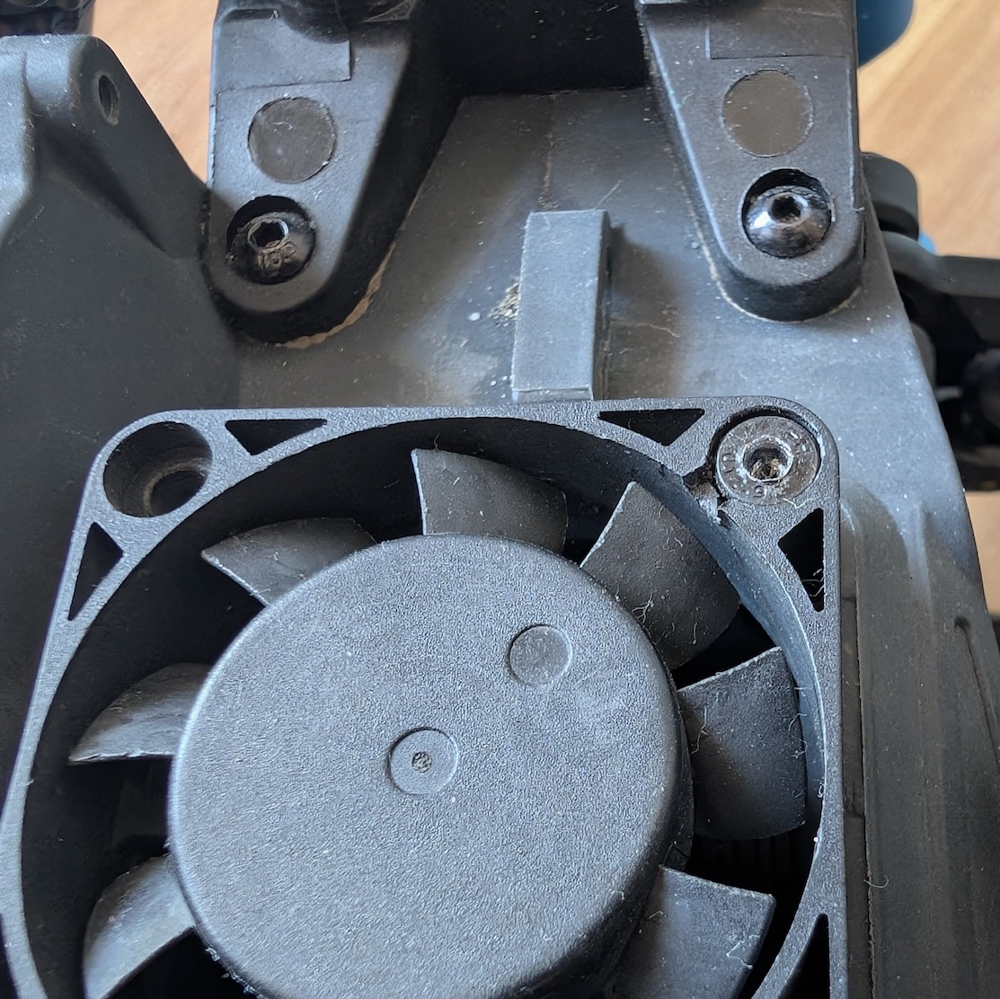
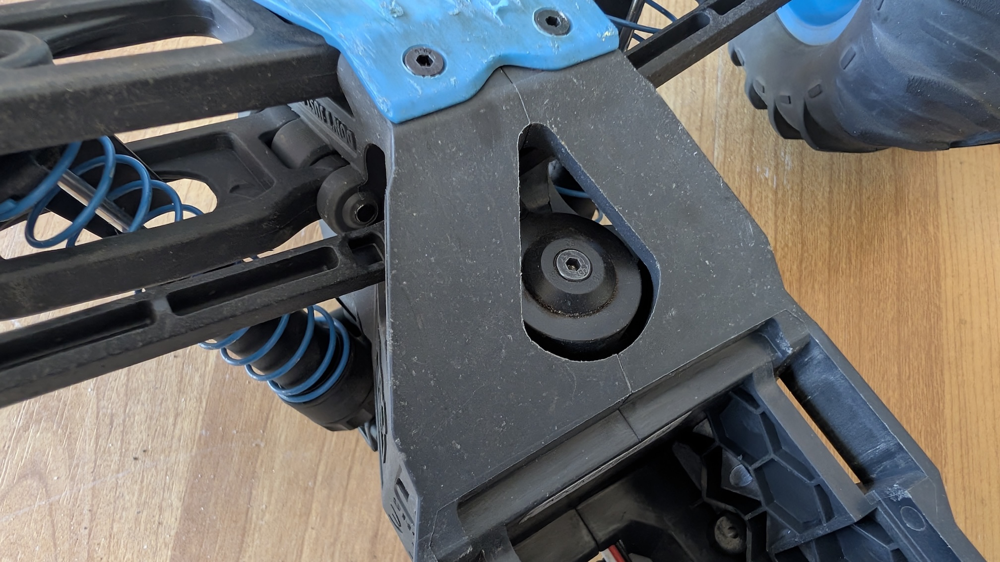
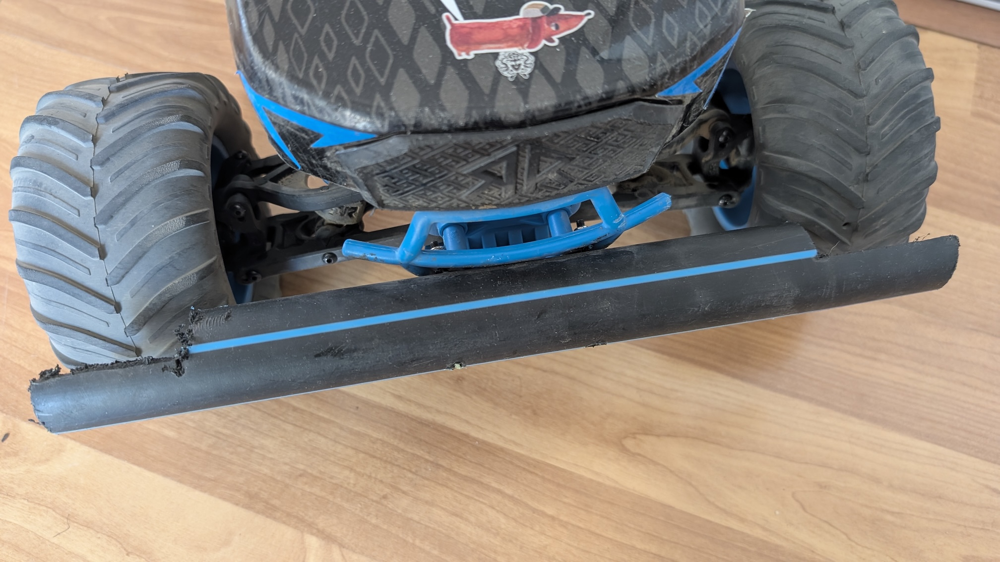
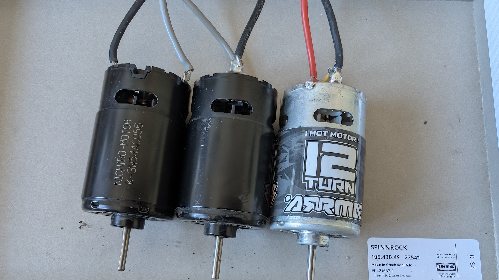
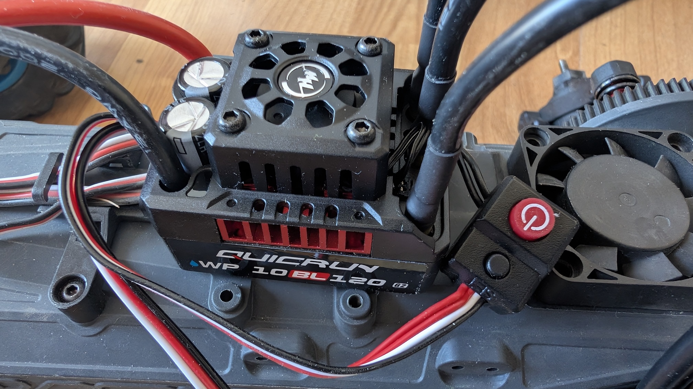
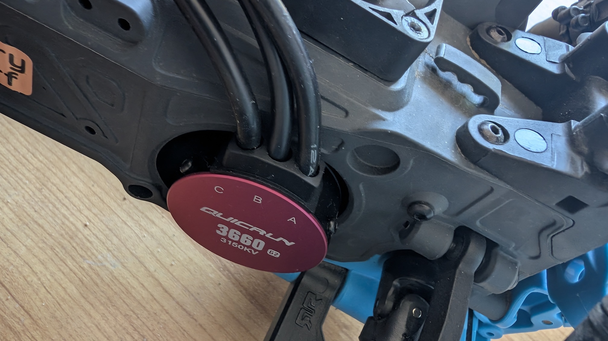
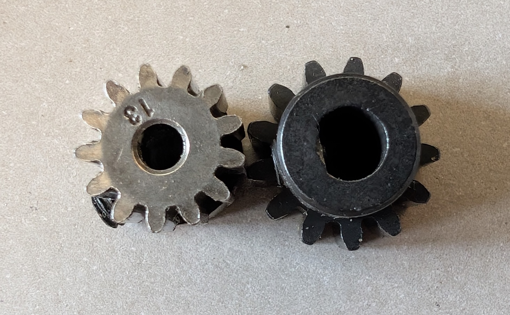
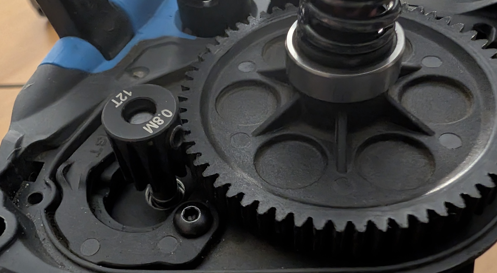

Table of Contents
And now to something completely different…
Vor ein paar Wochen bin ich in ein neues “Hobby” abgetaucht: Ferngesteuerte Semi-Pro-Fahrzeuge - ein Geburtstagsgeschenk für mein Kind.
Also habe ich mich in die Recherche gestürzt. Für mich war vor allem Robustheit und Modularität wichtig. Ich wollte, dass mein Kind mit dem Hobel auch durch das Gelände pflügen kann und ich wusste, dass hier und da auch mal was kaputt gehen kann. Also sollte es eine gute Ersatzteilversorgung geben.
Ich bin irgendwann auf den Arrma Gorgon gestoßen. Ein Monstertruck in der Größe 1/10. Neupreis ohne Batterie und Ladegerät: 180 Euro. Nicht wenig, aber fair. So schien es. Und weil zusammen fahren doppelt Spaß macht, habe ich mir gleich zwei Fahrzeuge geholt. Dazu noch vier Lithium-Polymer Akkus. (Hier fängt übrigens der ganze Kompatibilitäswahnsinn schon an: Für die LiPo-Akkus benötigt man ein spezielles Ladegerät.) Da im Serienfahrzeug “Bürsten-Motoren” verbaut sind, habe ich außerdem noch zwei Lüfter gekauft, damit ich nich nach 20 Minuten Fahrzeit eine Zwangspause einlegen muss. Und da die Lüfter ohne Schrauben geliefert wurden, kam noch ein Kasten “RC-Schrauben” dazu. Ihr seht - es läppert sich… aber keine Sorge, da kommt noch mehr!

Viel mehr. Der Anschluss des Lüfters passt z.B. nicht in den Controller. Also Seitenschneider ausgepackt und das überstehende Stück Plastik abgeschnitten. Das fängt ja gut an mit der Modularität.

Hier erstmal meine initiale (!) Einkaufsliste:
| Menge | Artikel | Preis |
|---|---|---|
| 2 | 1/10 GORGON 4X2 MEGA 550 Brushed Monster Truck RTR (ARA3230T1) | 160,20 EUR |
| 2 | High-Speed Lüfter 40mm Kunststoff 5V-8,4V, JST plug, 16000RPM (HSPX033) | 11,90 EUR |
| 4 | 5000mAh 2S 7.4V Smart G2 LiPo Akku 30C Hardcase - IC3 (SPMX52S30H3) | 122,27 EUR + 40,76 EUR |
| 2 | Smart S100 G2 USB-C Ladegerät (SPMXC2090) | 27,10 + 27,10 EUR |
| 1 | 500-teilige RC-Autoschrauben-Kits | 13,99 EUR |
| 1 | Versand | 4,90 EUR |
Der erste Tag war ein voller Erfolg. Die Elektromotoren haben ordentlich Power und wir hatten irrsinnig viel Spaß. Aber bereits am ersten Tag kam die erste Ernüchterung: Eine vordere Federstange war gebrochen.
Den Stoßdämpfer konnte ich provisorisch mit einem passenden Stück Schlauchkupplung reparieren können, bis der neue Satz Stoßdämpfer geliefert wurde. Mit Gaffa professionel fixiert, versteht sich.

Kosten dafür:
| Menge | Artikel | Preis |
|---|---|---|
| 1 | Shock Set 11mm Bore, 116mm Length, 500cSt Oil (ARA330756) | 23,30 EUR |
| 1 | Versand | 3,90 EUR |
Am nächsten Tag gleich die nächste Überraschung: Innerhalb weniger Stunden stieg die Lenkung aus. Das ist im ersten Moment maximal irritierend, weil nicht sofort klar ist, was nicht mehr funktioniert. Irgendwann stößt man auf den Servo-Motor für die Lenkung. Den hat es am zweiten Tag also direkt zerlegt, bei beiden Fahrzeugen.


Das Problem aus meine Sicht: Der Stoßdämpfer mag den Body schützen, nicht aber die Reifen. Und das sind einfache schlauchlose, sehr weiche Gummireifen. Jede Kollission wird direkt auf die Querlenker, die Lenkung und die Federung übertragen. Und die Servo-Motoren nutzen “billige” Kunststoff-Zahnräder, die das Spiel natürlich nicht lange mitmachen Eigentlich ein ganz klarer Konstruktionsfehler… aber scheinbar bin ich der erste, dem das auffällt?

Also die Bastelschrere ausgepackt und ein HD-PE-Rohr zugeschnitten und an den kleinen Stoßdämpfer geschraubt.

Und einen neuen Satz Servo-Motoren bestellt.
Kosten dafür:
| Menge | Artikel | Preis |
|---|---|---|
| 1 | Miuzei Digital Servo 25kg 270 Grad Servo+motor für mini Rc Auto 1/8 1/10 1/12 (1 Paar) | 24,98 EUR |
Der Einbau ist ziemlich frickelig, da die Querlenker mehr oder weniger kompliziert unter einer Kunststoffbrücke liegen. Irgendwann war aber auch das Problem gelöst und der nächste Ausflug konnte starten…
Wenn da nicht… das nächste Problem wäre:
Nach nicht einmal einer Woche stiegen dann doch auch die Motoren des Antriebs aus. Auch hier gestaltete sich die Fehlersuche mehr als schwierig, weil erstmal nicht klar ist, ob es an der Batterie, dem Controller oder der Steuerung liegt.
Doch irgendwann war die Gewissheit da: Beide Motoren sind defekt. Trotz Zusatzlüftung. Also schrieb ich den Support an, was ich nach dem Stoßdämpfer schon hätte machen sollen. Das Dilemma: Ich wollte die Fahrzeuge ja behalten, weil mein Kind den Truck schon ins Herz geschlossen hatte.

Der Support war zwar freundlich und hat mir auch recht schnell Ersatz für beide Motoren angeboten. Da ich wenig Lust auf Streit hatte, habe ich den kaputten Stoßdämpfer und die Servo-Motoren ignoriert und micht mit den neuen Motoren zufrieden gegeben - ich wollte einfach nur fahren!

Als die Motoren geliefert wurden, habe ich mich sofort an den Einbau gemacht. Alles klappte wie am Schnürchen. Voller Vorfreude habe ich die beiden frischen runden Elektro-Herzen in die Fahrzeuge gepflanzt und mein Kind und ich haben eine neue Ausfahrt gewagt.
Nach wenigen Minuten der nächste Schock. Aus einem Fahrzeug stieg starker Qualm auf. Diesmal lag das Problem aber beim Anwender - also bei mir. Voller Euphorie hatte ich vergessen, die Isolation der Verbindung zwischen Motor und Controller wieder aufzustecken. Kurzschluss.
Und der reißt gleich einige Bauteile mit ins Nirvana, weil wohl nirgends eine Sicherung verbaut ist.
Nagut, dachte ich mir. Ich wollte ja sowieso auf bürstenlose Motoren umrüsten. Also die Recherche-Maschine erneut angestoßen. Und hier ein kleiner aber wichtiger Rat: Verlasse dich nicht auf Gemini & ChatGPT. Denn hier wird dir immer wieder alles mögliche empfohlen, nur nicht das, was wirklich passt. Sowas wie “Kompatibiltiät” scheint die KI nicht zu berücksichtigen. Und so kam es zum nächsten Problem:
Ich hatte einen scheinbar perfekten Motor gefunden. Doch der kommt nicht alleine. Du brauchst dazu noch einen neuen Controller (egal, der alte ist ja ehe defekt) und einen eigenen Empfänger. Und das ist auch noch nicht alles: Während die originale Controller-Empfänger-Einheit mit Schrauben am Fahrzeug befestigt werden, gibt es für den neuen Empfänger…: Nichts.

Wie dem auch sei. Der neue Antriebssrang kommt an und ich mache mich an den Einbau. Hoffnung keimt auf. Bevor ich das Schmuckstück verbaue, will ich es natürlich auf Funktion testen. Also Controller und Motor verbunden, Controller eingesteckt und den Akku angeschlossen.
Den Akku angeschlossen? Denkste. Der Akku kommt mit einem IC3 Stecker. Der hat zwei Pole für Plus und Minus und einen kleinen Pin, über den das Ladegerät die Akkukapazität und den Ladestatus abfragen kann. High Tech! Der Controller hat aber einen EC3-Stecker. Und der passt nicht ohne weiteres auf den IC3-Stecker.
Recherchemaschine angeworfen, erneut. Adapterkabel rausgesucht.
| Menge | Artikel | Preis |
|---|---|---|
| 1 | EC3 Männlich Stecker auf XT60 Buchse Adapter mit 5cm 14awg Draht für RC Lipo Batterie Auto | 8,99 EUR |
Adapterkabel kommt an. Adapterkabel angeschlossen. Controller angeschlossen. Akku angeschlossen. Motor: Läuft.


Also voller Freude den neuen Motor in das Gehäuse eingebaut. Nunja… es zumindest versucht. Denn: Beim originalen Motor laufen die Kabel hinten heraus, der neue Motor hat eine seitliche Führung. Außerdem ist der Motor viel kürzer.
Kurz: Er passt nicht in das Gehäuse. Frust macht sich breit. Also… so richtig.
Kosten für den neuen Motor - der ja leider prompt zurück ging:
| Menge | Artikel | Preis |
|---|---|---|
| 1 | Quicrun Bruhsless Combo WP10BL120G2 mit 3652SL-3250KV-G2 für 1:10 | 84,95 EUR |
| 1 | SLR300 3-Kanal-SLT-Empfänger Einzelprotokoll | 27,48 EUR |
| 2 | Versand | 5,99 EUR |
E-Mail an den Händler. Motor geht zurück. Versandkosten gehen auf mich. Recherche geht weiter. Es muss also ein Motor sein, der länger ist oder dessen Leitungen nach hinten herausgeführt sind. Und das wäre dieser:
Kosten:
| Menge | Artikel | Preis |
|---|---|---|
| 1 | Quicrun Brushless Combo WP10BL120G2 mit 3660SL-3150KV-G2 (HW38030210) | 82,75 EUR |
| 1 | Versand | 5,90 EUR |
Bestellt, gewartet, geliefert. Mit einem Rest-Funken Hoffnung ausgepackt.

Der Motor passt tatsächlich exakt in das Gehäuse. Also.. wirklich exakt. Also altes Ritzel herausgekramt und… moment, irgendwas passt da nicht.
Während das Ritzel noch problemlos auf den “kurzen” Motor passt, gibt es beim längeren Modell ein wichtiges Problem: Der Motor ist nicht nur länger, seine Welle ist auch dicker. 5 mm. Das Ritzel hat aber nur eine 3,175 mm Bohrung.
Die Recherche geht weiter. Ich werde bei Amazon fündig, das spart Versandkosten. Zwei Tage später kommt das neue Ritzel an. Es sieht perfekt aus. Es passt perfekt auf die 5 mm Welle. Ich baue den Motor ein, ziehe ihn fest.
Kosten:
| Menge | Artikel | Preis |
|---|---|---|
| 1 | 13T Mod1 Safe-D5 Ritzel | 9,99 EUR |
Ich will das Ritzel aufsetzen.

Es passt nicht. Die Zähne passen nur knapp in die Zahnlücken des Getriebes und der Durchmesser ist auch zu groß. Die Reibung wäre zu groß. Und da das große Getrieberad auch nur aus Plastikzahnrädern besteht, macht das den Druck wohl nicht lange mit.
Wut. Verzweiflung. Irritation. Selbstzweifel. Die Suche geht weiter: Das passende Ritzel sollte nicht mehr als 12 Zähne haben, das Modul - also die “Dicke” der Zähne sollte 0,8 betragen. Hinzu kommt: Die Welle ist nicht rund, sondern hat eine D-Form (D-Shape, Safe-D) - um das Rutschen des Ritzels zu verhindern. Dinge, die man wissen muss. Und die die Auswahl stark einschränken. Auf die D-Form verzichte ich und hoffe, dass das ein einfaches Ritzel mit 5 mm Bohrung und 12 Zähnen Modul 0,8 es tut:
| Menge | Artikel | Preis |
|---|---|---|
| 1 | 5 Stück 0,8mm Ritzel-Satz aus gehärtetem Stahl 5 mm Welle 11T, 12T, 13T, 14T, 15T | 15,99 EUR |
Das Ritzel passt. Der Antriebsstrang ist wieder komplett. Aber lange nicht perfekt sondern eher ein zusammengebastelte Provisorium auf Dauer. Denn: Die Madenschraube des Ritzel ist zu lang (obwohl mitgeliefert - wtf?). Man muss also darauf achten, das Ritzel nicht zu tief aufzuziehen. Durch das Adapterkabel IC3 auf EC3 fehlt nun auch Platz in der Akku-Bucht, was den Wechsel des Akkus ein bisschen erschwert. Und zu “guter” Letzt: Irgendwie muss man Empfänger, Controller und Schalter am Gehäuse befestigen. Es gibt zwar Bohrungen im Gehäuse, aber dazu bräuchte man eine Art Käfigkkonstruktion. Ich probiere es erstmal mit Klettband und doppelseitigem Klebeband. Insgesamt ein ziemlich chaotischer Aufbau, der weit entfernt vond er Hoffnugn “Modularität” ist:



Fazit
Erstmal Selbstkritik: Der Kurzschluss geht auf mein Konto. Das war selten dämlich.
༼ʘ̚ ʖ ʘ̚༽
Und ja, die technischen Eigenschaften der Komponenten sind - wenn man einmal weiß, worauf man achten muss - eigentlich gar nicht so schwer zu verstehen. Man sollte halt wissen, wo man schauen muss. Und dazu nochmal ein wichtiger Hinweis: Ich habe anfangs versucht mit Gemini, ChatGPT oder Perplexity die korrekten Teile zu finden. Die KI konnte auf ganzer Linie nicht überzeugen. Denn auch hier gilt: Wenn man nicht weiß, worauf man achten muss, weiß man auch nicht wonach man fragen muss. Und dann bekommt man natürlich nichts hilfreiches aus der Maschine.
Aber selbst konkrete Nachfragen führten viel zu oft zu falschen Links oder falschen Empfehlungen. Ich habe hier also eine Menge Lehrgeld bezahlt. Mein Tipp: Direkt mit dem Händler reden - obwohl meine Hoffnung bei der KI ja eigentlich war, subjektive Beratung zu erhalten und nicht in einem Verkaufsgespräch zu landen.
Zumindest eine Sache konnte ich der ganzen Geschichte abgewinnen: Das Basteln am Gerät macht sehr viel Spaß. Für die interessierten hier mal die wichtigsten Punkte, worauf man achten muss, wenn man beim Arrma Gorgon “nur” den Motor tauschen möchte - das lässt sich sicher auch auf andere Fahrzeuge anwenden:
-
es gibt sehr viele Batterietypen, LiPolymer sind wohl so etwas wie der Gold-Standard; jede Batterie-Klasse benötigt ein passendes Ladegerät, achte darauf, ob die Batterie einen Steuer-Kanal mitbringt, das ist eine zusätzliche Leitung, die entweder direkt am Stecker liegt oder über ein eigenes Kabel angeschlossen wird - damit kann das Ladegerät die Kapazität und den Ladestatus der Batterie abfragen
-
der Motor muss lang genug sein, wenn die Kabel seitlich herausgeführt werden, also hier mindestens 60 mm - zu lang darf es natürlich auch nicht sein, bei kürzeren Motoron müssen die Kabel hinten herausgeführt werden - solche Modelle habe ich aber nicht gefunden
-
du brauchst neben dem Motor einen neuen Controller, der vermutlich ohne Empfänger geliefert wird; die genauen Typ-Bezeichnungen siehst du ja oben, es gibt teure “Einstellungskarten”, die du im Hobbybereich aber nicht brauchst (damit kannst du den Controller einstellen, Bremsverhalten, Lenkung, usw.)
-
achte auf die Anschlüsse deiner Batterie und des Controllers, es gibt zwar Standards, aber eben nicht nur einen: EC3, IC3, XT60, männlich, weiblich und so weiter
-
das Original-Ritzel, also das kleine Zahnrad, das den Motor mit dem Getriebe verbindet, hat eine Bohrung von 3,175 mm - achte auf das Wellenmaß des neuen Motors (andere Namen für das Ritzel sind übrigens Pinion oder Sprocket)
-
die Original-Welle hat eine D-Form, um das Rutschen des Ritzels zu verhindern, sie ist also nicht komplett rund, der Hersteller nennt das
-
überschwänglich Safe-D5, das D steht einfach nur für die Form des Querschnitts
-
das ist aber noch nicht alles: Die Anzahl der Zähne und der Modus müssen zum Zahnrad des Getriebes passen (der Modus gibt an, wie dick die Zähne sind) - du kannst sicher auch ein anderes Ritzel verbauen, musst dann aber auch das Zahnrad des Getriebes anpassen - das kann sich auf die Leistung auswirken, wenn sich die Übersetzung ändert
-
willst du einen Lüfter nachrüsten, brauchst du längere Schrauben
-
achte darauf, wie der neue Motor befestigt wird, ob er mit der passenden Bohrung kommt oder an das Chassis geklebt werden muss
Aber abschließende auch ein Kommentar zu der Qualität und der Konstruktion, vor allem des Arrma Gorgon: Der serienmäßige Bürstenmotor ist bauartbedingt mehr oder weniger offen und liegt - auch bauartbedingt - ziemlich ungünstig an der Antriebswelle nahe des Bodens. Damit ist er permanent dem ganzen Staub ausgesetzt, der durch die Lüftungsschlitze direkt in das Gehäuse eindringt. Das ist Irrsinn und kann auf Dauer gar nicht funktionieren. Das Fahrzeug muss also mit einem geschlossenene bürstenlosen Motor aufgerüstet werden, um überhaupt sinvoll eingesetzt werden zu können.
Fraglich ist auch die Design-Entscheidung der Stoßstange. Abgesehen davon, dass es irgendwie albern aussieht, schützt es zwar das durchaus stabile Chassis. Aber jeder Aufprall wird über die Reifen und Querlenker auch direkt an die Stoßdämpfer und den Servo-Motor weitergegeben. Auch hier nur eine Frage der Zeit, bis diese Bauteile ausfallen. Die langen Querlenker wirken wie ein Hebel, der bei jedem Stoß am Servo-Motor zieht. Dessen Plastikrädchen machen das sicher nicht lange mit.
Der Arrma Gorgon ist in seiner Serienausstattung aus meiner Sicht überhaupt nicht für den harten Einsatz im Gelände ausgelegt. Aber das ist nicht unbedingt der Eindruck, schaut man sich mal die Promo-Videos dazu an:
https://www.arrma-rc.com/de/product/1-10-gorgon-2wd-rtr-brushed-monster-truck-blue/ARA3230T1.html
Aber vielleicht hat Arrma dazu ja eine Erklärung?
Zusammenfassung
Erfahrungsbericht zum Arrma Gorgon 1/10: Einkauf, Umbau, Reparaturen und Kostenübersicht mit Praxistipps.
Hauptthemen: Ferngesteuerte Fahrzeuge Arrma Gorgon RC-Tuning Ersatzteile Kompatibilität
Schwierigkeitsgrad: fortgeschritten
Lesezeit: ca. 12 Minuten